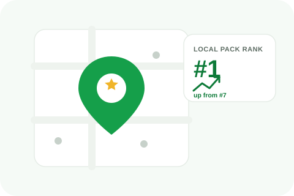

A suspended profile usually comes as a surprise, one day your listing is visible, the next it's gone from Maps and Search with little explanation. Here's what typically causes it and what reinstatement actually looks like.

These aren't official Google terminology, but they're useful shorthand for two very different situations. A soft suspension means your listing disappears from Maps and Search, but you can still log into your Business Profile dashboard and see the suspension notice. A hard suspension is more serious: the account itself is suspended, and you may lose dashboard access entirely. Soft suspensions are far more common and generally easier to resolve.
The most common root cause. This covers things like a business name that includes keywords or descriptors beyond your actual registered name, "Joe's Plumbing - Fast Emergency 24/7 Service" instead of just "Joe's Plumbing", a category that doesn't match what you actually do, a listed address that isn't a real, staffed location for a business type that requires one, or a pattern of fake or incentivized reviews tied to the profile. Google's automated systems and human reviewers both watch for these.
Google treats sudden changes to key profile fields, business name, address, phone number, category, as a signal worth re-verifying. If you've recently made one of these changes, especially more than one at once, and the listing went down shortly after, that's very likely the trigger. This isn't necessarily a sign you did anything wrong, it's an automated response to a pattern that's also common with fraudulent listings.
Anyone can report a Business Profile for violating guidelines, and a report gets reviewed regardless of who filed it or why. A pattern of reports, even unfounded ones, can prompt Google to re-examine a listing more closely. This is a real, if frustrating, part of how the system works.
If your business was never fully verified, or if a verification method expired or failed silently, the profile can be suspended as a result. This is common for newer listings or ones that switched verification methods partway through.
Google provides a reinstatement request process directly from the dashboard notice, which typically asks for documentation supporting your business's legitimacy, proof of address, a business license, photos of a physical location where applicable. A vague or incomplete request is less likely to succeed than one that directly addresses the specific reason given for suspension. There's no fixed timeline Google publishes for how long review takes, and no way to guarantee reinstatement, only a stronger or weaker case for it.
Don't keep making further changes to the profile while a suspension is under review, additional edits can complicate or reset the review. Fix whatever's likely the actual cause, revert a name back to your real registered name, correct a mismatched category, before or alongside filing a reinstatement request, rather than requesting reinstatement for a listing that still has the violation in place.
A denied reinstatement request isn't necessarily the end of the road, but resubmitting the identical request rarely changes the outcome. Look closely at whatever reason was given and address that specifically, more complete documentation, a corrected field that was overlooked the first time, clearer evidence of your business's legitimacy. Appeals that repeat the same information without adding anything new tend to get the same result.
Once a profile is reinstated, keep edits to key fields, name, address, category, deliberate and infrequent rather than frequent or reactive. Avoid review-generation practices that could look incentivized or coordinated. And if you genuinely need to change something significant, like relocating or rebranding, expect that change alone to draw a closer look, and be ready to support it with documentation if asked.
We'll identify the likely cause and help put together a reinstatement request that actually addresses it.